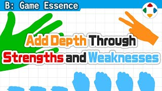
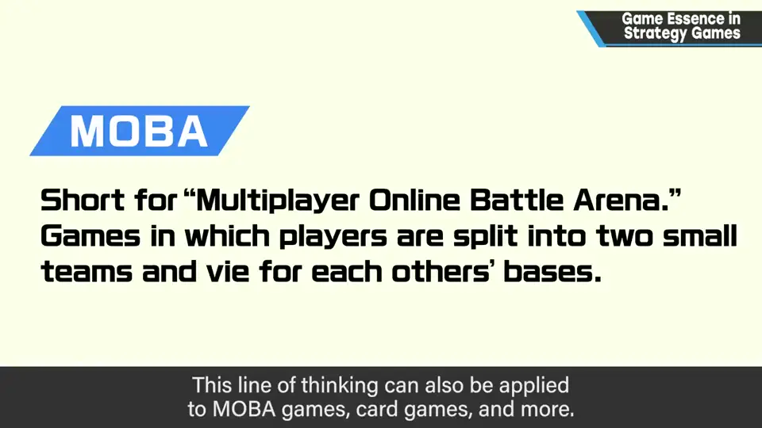
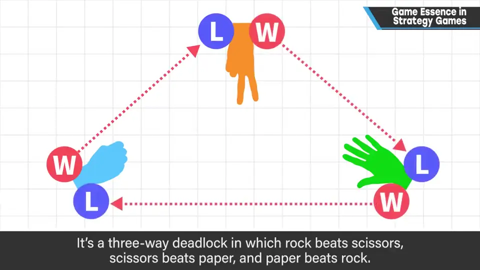
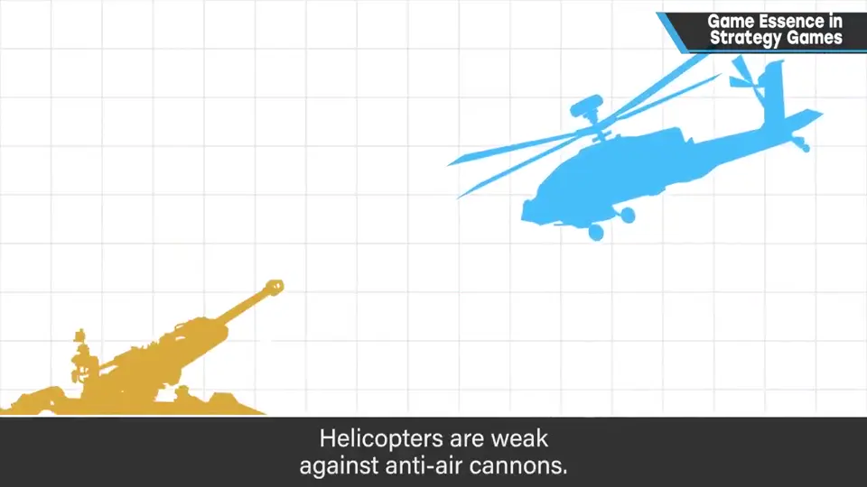
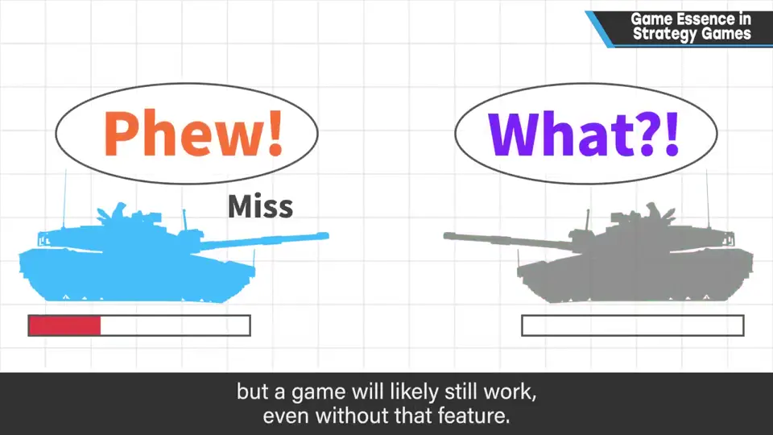
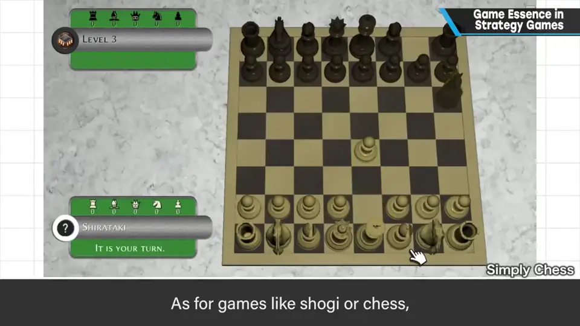
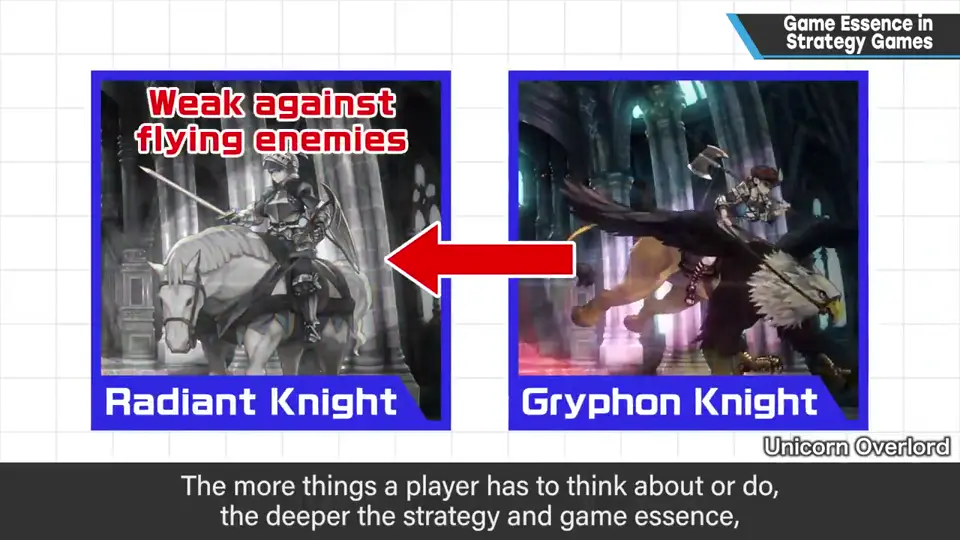

速览
策略模拟游戏的游戏性（博弈）有好几种，这里从战力的角度解说，也可用于 MOBA、卡牌游戏等。同样的战力同样地碰撞，大致会打平。石头剪刀布是三方互克：用同样的组合碰撞会打平；用战略改变组合、实现压倒性胜利，就是策略模拟最根本的游戏性。假如只有石头便宜、能准备更多，布有两倍攻击力，剪刀能越过对手攻击——这些力量和特性的差异让游戏变深。例如步兵怕坦克、坦克怕攻击直升机、攻击直升机怕防空炮、防空炮怕步兵：在符合常识的基础上考虑明确的长短处和使用成本，让游戏更有深度。很多游戏有随机闪避攻击的机制，但尽量去掉也许也能成立：同样的战斗结果不同，会让人不敢大意，但随机也有些不公平。另一方面，将棋和国际象棋不是靠单位战力，而是靠攻击范围产生博弈；地图兵器、远程攻击等也是：选择最能发挥效果的站位，同样是「用同等战力单方面打倒对手」的玩法。能思考和能做的事越多，战略性和游戏性就越强，但恰当地赋予长短处很重要。视频游戏擅长计算，容易细致设定相克效果。战略奏效时很爽——为了演出这种爽快感，好好钻研性能与相克吧。
1. 同等战力会打平 0:04
策略模拟游戏的游戏性（博弈）有几种，这里从战力的角度解说。这种思路也能用于 MOBA、卡牌游戏等。

同样的战力同样地碰撞，大致会打平（不能说一定）。
2. 石头剪刀布：用战略改变组合 0:35
石头赢剪刀、剪刀赢布、布赢石头——三方互克。用同样的组合碰撞会打平；用战略改变这个组合、取得压倒性胜利，就是策略模拟最根本的游戏性。


- 如果只有石头便宜，可以准备更多；
- 如果布有两倍攻击力；
- 如果剪刀能越过对手攻击——
这些力量和特性的差异会让游戏越来越深。例如：步兵怕坦克、坦克怕攻击直升机、攻击直升机怕防空炮、防空炮怕步兵。在符合常识的基础上，考虑明确的长处与短处，以及使用它们的成本，让游戏有深度。
3. 随机与攻击范围 1:27
很多游戏有随机闪避攻击的机制，但尽量去掉也许也能成立。同样的战斗结果不同，会让人不敢大意；但随机也给人有点不公平的印象。


另一方面，将棋和国际象棋不是靠单位的战力，而是靠攻击范围产生博弈。地图兵器、远距离射程攻击也是：选择最能发挥效果的站位——同样是用同等战力单方面打倒对手的玩法。
4. 钻研性能与相克 2:05
能思考的、能做的越多，战略性及其带来的游戏性就越强；但恰当地赋予长短处仍然很重要。尤其是视频游戏擅长计算，容易细致地设定相克效果。

自测题
1. 策略模拟最根本的游戏性是什么？
同等战力相撞大致打平；用战略改变组合（利用克制关系），实现压倒性胜利。 0:44
2. 除了克制关系，还有哪些差异能让策略游戏更深？
成本（如更便宜、能准备更多）、攻击力差异、特殊特性（如能越过对手攻击）；明确的长短处与使用成本。 0:55
3. 将棋、国际象棋靠什么产生博弈？
不是单位战力，而是攻击范围：选择最能发挥效果的站位，用同等战力单方面打倒对手。 1:50